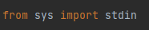
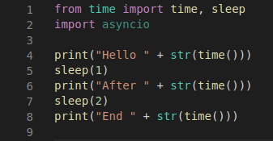
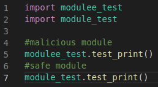
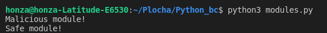
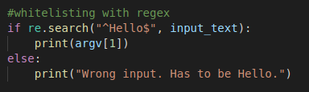

Basics
There are some important basics that needs to be shown to the programmer. They consist more of a right Python settings than some coding examples. Setting Python right can prevent many possible vulnerabilities.
Version of Python
The first basic that programmer needs to have in mind is the right version of Python. Many of the vulnerabilities have been repaired in the newer Python versions. For example in Python version 2.5 exists exploit, where can attacker cause buffer overflow via string in socketmodule.c.
Preventing is simple by using the newest stable version of Python. If your company is using Python < 3.0, consider updating Python version and its dependencies. It is not only more secure, it is also offering better user experience.
You can check your Python version by typing this into your command line:
$python --version
Virtual environment
The safest programming in Python should be in virtual environment. It is recommended to use it, because venv (virtual environment) can assure that Python projects are divided from the folder with Python itself. If project has some malicious modules or other security problems, it is limited only to this project and does not effect other Python projects on this device.
Importing modules
There are several methods how to import a module in Python. In particular absolute and relative import and implicit and explicit import. The best way to use import is to use absolute import. Example shows how absolute import looks like.

Absolute import assures that programmer imports exactly what he wants. Relative import is from Python 3 on wards only explicit. Implicit import has been removed.
For secure module import is recommended to use only absolute import or relative explicit import. Relative import only when programmer is importing from his own Python files. It is not recommended using relative import when importing third party modules.
The second problem with modules is that we do not need all from the module. We usually need only some of the functions or classes. In Python exists many ways how to import particular parts of modules. The best way how to import module is to specify class and function by absolute import.
Another way of importing that exists is
from sys import *, but that is really insecure way of import. The first problem is that we are importing functions that we do not need and the second problem is that we usually do not know what is in the module. It means that there is probability which is rising with number of modules, that we download module with either malicious function or we overwrite the previous module.
On the figure there is comparison between wrong importing, where importing time overwrites module asyncio. It is basic example form standard library, but it is important to show some of the basic mistakes. Both of the modules contains function
sleep(). In the wrong example there is no prove that we are calling sleep from time or asyncio. In this case it depends on the latest import, which is time. The example below is better example, where from module time is selected only what is needed. The module asyncio is there only for the showing of no overriding.

Typosquatting
The last warning in this topic is typo squatting. Typosquatting is kind of an attack that targets heedless programmers. It works like this: programmer writes an import, but makes a typo. Import is still not underlined as a mistake, why? Programmer has just imported a malicious package. Be careful with packages and check after yourself. There are dozens of malicious packages in PyPI. Example, where programmer typed
modulee_test instead of
module_test. In this example there is called only print, but it could be for example malicious module with system command.


From usable point of view is best practice to divide imports into three categories. The first category are standard library imports, the second are third party imports and the last one is local imports. Each category is sort in alphabetical order.
Standard Python
In this section I will be dealing with things that are related to the coding itself. They are still basic, but their impact on security is much more significant. I will show some validation techniques and I will compare two main Python validating constructions. Then there will be flaws from the standard library like command injections and path manipulating.
Input validation
The right way of validating user input can assure that the program will be very secure. But there are many practices how to check user input. Some of them are better than others. In this section will be shown the right and most secure way of input validating.
Blacklisting vs. whitelisting
There are two main ways how to validate input. The first is blacklisting. Blacklisting means marking some inputs as forbidden. The main problem of this technique is that it is practically impossible to catch every wrong input because there are theoretically infinite wrong inputs that user can create therefore it is advisable using whitelisting.
Whitelisting is a practice when programmer knows what the right input is and checks only the right input. It is more secure and also usable technique because it costs theoretically less conditions and less lines to create. It seems this statement is wrong, but blacklisting costs theoretically infinite number of lines. The most suitable technique for whitelisting is to create a regular expression for the right input. Regular expression (regex) is a sequence of characters that specifies a search pattern in text. Programmer should use regexes because one right regex can cover all the wrong inputs. There is also online regex tool which can be really helpful. Module
re assures regular expressions for Python. Python also contains many built-in functions like
isdigit() that can check if the string is digit or not.
Finally, some examples on blacklisting, whitelisting and regular expressions. The goal of these examples is to explain the main differences between these techniques and the importance of the good regular expressions. Regexes are sometimes very hard to code right so I recommend using the online tool mentioned above.
In this example the input has to be the string "Hello". First example uses blacklisting and the second one uses whitelisting with some regular expression. Which one looks safer?
The example is very simple, but it proves the point because using whitelisting there is only one condition and using blacklisting there are four conditions and still it is not sufficient because word "Hallo" can be written on the output.

Try-except vs. if-else
In Python and other languages exist two main constructions for conditions. Try-except and if-else are used for flow and condition control. They work with similar logic, but the benefits from using one or the other can be quite significant. Try-except is ideal when programmer does not know about all possible errors that can occur. With one conditional block programmer can cover many errors. But it is not without a cost. If-else blocks are more efficient and it is recommended using them when we know possible errors. Try-except is faster when there is less possibility of error, but when the possibility declines, the if-else block becomes faster.
When programmer is working with files it is recommended to use try-except block, because when some error happens when opening or closing file and try-except block is present none information are lost. Try-except block works with the system itself. In conclusion it is safer to use try-except block when we are not sure about possible errors or when there is small possibility of some error/exception. In the other cases it is recommended to use if-else block.
Standard library flaws
Flaws are in every aspect of programming languages. The first area which I would like to mention is standard library. In the standard library there are many modules, classes and functions. Among them are some functions which require caution. There is a possible injection, path changing also we have to be cautious when working with files and logs. There is a lot of topics for this subsection.
Temporary files - mktemp()
Sometimes it is necessary to create temporary files when coding a program. In Python exists special module for this problem and it is called
tempfile. It is a part of standard library. This module seems secure except one function
mktemp(). Function
mktemp() has been deprecated since Python 2.3, but it is still in the module. The advise is not to use the function works like this. Function creates link with absolute path to non existent file at that time. Before your program starts working with this path and creates real file, somebody else can steal this path and do whatever he wants with it. More precisely with created file.
Instead of
mktemp() use
mkstemp() which is more secure or you can use function
tempfile.TemporaryFile() like in example below.
Pickle module
Python module pickle is used for serializing or de-serializing data from other sources. It can be used for sending or receiving object state. Pickle is converting byte streams to object structure and vise-versa. The vulnerability lies in the byte string, which is not formatted and it is prone to outside code execution.
The best solution for this vulnerabilities are:
- do not pickle or unpickle data from untrusted sources
- use HMAC or other algorithms for ensuring integrity of data
- use JSON instead of pickle
Examples could be found
here.
Command injection (exec, eval, input, os)
These built-in functions are vulnerable against the same problem. Command injection is a problem when attacker can execute code through other function or code. Problem occurs when programmer does not sanitize user's input. These selected functions are the most used ones, so they will be described and given solution.
Eval is function which evaluates given expression through Python evaluating rules. It can be used for evaluating number expressions and so on. Return value is value from evaluated expression. Exec is a built-in function for executing Python code. Both of these functions face same problem with user input. Solution for right using of these functions is validating user input and not giving the input right into these functions. The third function is a little bit different.
Function input reads user input and puts it into variable. In Python 2.x was possible create exploit like this:


This is fixed now, but for someone using older Python version (not recommended) it could be still a problem. Function input from version 3.0 converts input into the string that is the reason why in Python 3 is the condition false, but in Python 2.x is true because function converted given input as a variable. It means that the condition is for Python 2.x something like
var password == var password which is true.
Another functions which are frequently used are from os module. The most dangerous function is
os.system() which uses only single string argument that is executed as command. That opens code for vulnerabilities therefore it is not recommended to use this function at all. And if it is necessary, check the argument is valid and be sure that it is really what you want to execute. Recommended function to execute commands is
subprocess.function(). But there is also vulnerability if programmer sets argument
shell=True. This means that argument can be in one string. Recommended tactic is give argument to function as a list and set shell to false.
Regular expressions
Even if regular expressions are efficient tool when checking user input, they are vulnerable against ReDoS attack. This attack uses algorithmic complexity against program. Complexity of regular expression can be up to 2^m that means some expressions would take with each character exponentially to evaluate. Thus programmer has to be careful when using regexes. There are some regexes that are forbidden due to its evaluation complexity against inputs like
aaaaaaaaaaaaaaaaaaaaaaaaaaa!. List of evil regexes can be found here.
String formatting
String formatting in Python also has its own problems. They are not problems like in chapter 3 where is memory the main problem, but bad string formatting can cause can cause leak of data. Through
str.format() can attacker see internal parts of objects or some sensitive data.
The best solution is to check user input using whitelisting or do not have user input at all. Other solutions include using "old" style formatting. That type of formatting is similar to C string formatting and it is relatively secure. Its cons are smaller clarity and longer code. Other solutions are to use f-strings (Python 3.6+) or template stings from standard library.
XML
Sometimes it is needed XML input to proper working program. There are several Python modules which can help with XML. Problem is that every XML Python module out there is vulnerable against two types of attacks. The first one is called Billion laughs attack and the second one The Quadratic blowup. The best practise here is using package defusedxml. Defusedxml is created to prevent especially these two attacks.
Random
Generating numbers can be more secure than with standard random from standard library. Its algorithm is quite predictable. Use module with
secret.random() instead. All the more if programmer is using generator for secret or encrypted needs.
Assert
Assert comes very handy in testing, because programmer can assume with this statement that the assertion is true and if it is not Python raise assertion error. But assert should be used only in testing, because having assertion in production code is vulnerability. Assert can be carried out only if Python's variable
__debug__ is set to true. Even if the variable is set to true does not mean that in every environment on every device is set to true. Out of this problem can raise problem where interpret skips part of the code or executes part of the code that should not be executed. It can created undefined behavior.
Tarfile and zipfile
Tarfile is module for extracting archives. Programmer should avoid using tarfile when extracting from untrusted sources. In the archive could be file with absolute path containing .. or / which can cause problem because functions in tarfile can not handle that. Use module tarsafe instead.
The second problem with archive files is so called "zip bomb". This bomb has one goal. Crush the host's system or program by decompressing small file containing amount of data bigger than host's memory. Programmer can defend setting and checking maximum size of decompressed data and maximum number of files. This
link shows .zip files having a few kilobytes compressed but after decompression they needs terabytes of free space.